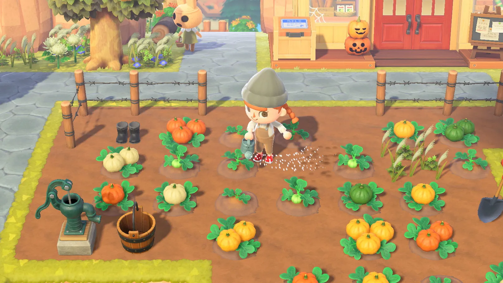
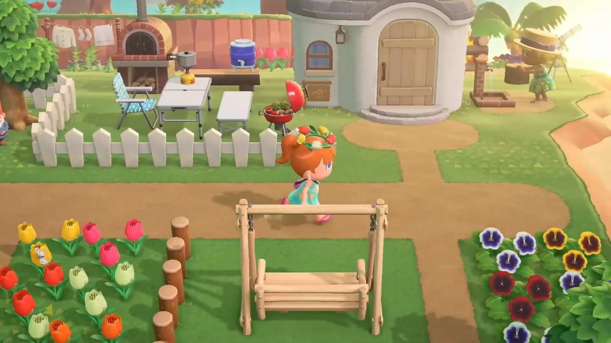
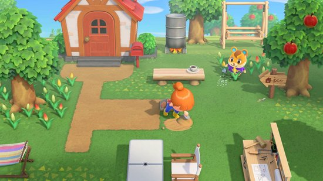
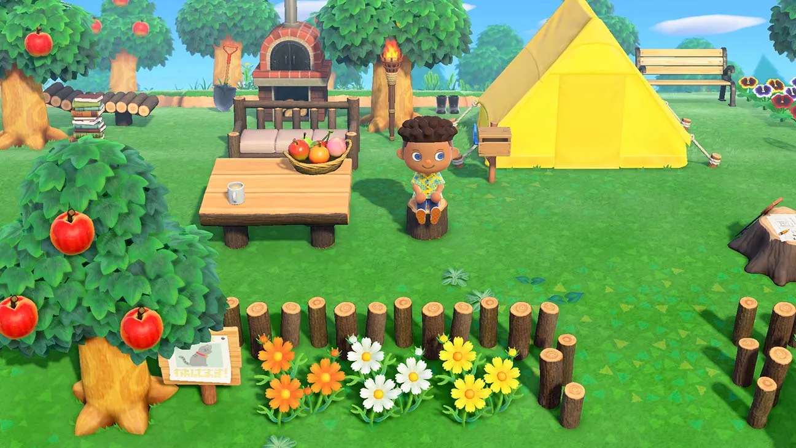
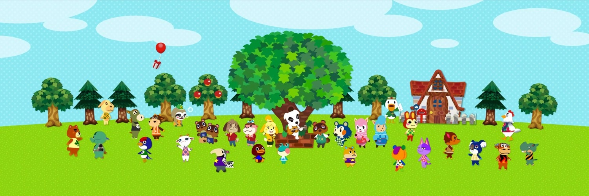

Escapa a tu propia isla paradisiaca
Escapa a una isla desierta y crea tu propio paraíso mientras exploras, creas y personalizas en el juego Animal Crossing: New Horizons. Tu isla cuenta con riquezas naturales que podrás utilizar para construir de todo, desde herramientas hasta objetos que harán tu vida más placentera. Podrás cazar insectos al amanecer, decorar tu pequeño paraíso durante el día o disfrutar del atardecer en la playa mientras pescas en el océano. La hora del día y la estación coinciden con las de la vida real, así que cada día en la isla es una oportunidad para encontrar y descubrir sorpresas.
Muestra tu isla a tu familia y amigos, o empaca tus cosas y visita la de ellos. Ya sea que juegues en línea* o con otros a tu lado**, la vida isleña es mucho mejor cuando la puedes compartir. Sin necesidad de subirte a un avión podrás conocer a un elenco de encantadores residentes llenos de personalidad. Algunas caras conocidas como Tom Nook y Canela brindarán sus servicios y con todo gusto te ayudarán a construir tu comunidad. Date una escapada a tu isla… como quieras, cuando quieras y donde quieras.
• Construye tu comunidad desde cero en una isla desierta rebosante de oportunidades
• Crea tus propias vacaciones y personaliza a tu personaje, tu hogar, tus decoraciones e incluso el paisaje
• ¡Recolecta materiales para construir desde muebles hasta herramientas! Luego, utiliza lo que creaste para darle a tu isla un toque personal
• Observa cómo la hora del día y las estaciones coinciden con la vida real, ¡incluso en tu hemisferio! Cada día podrías sorprenderte realizar descubrimientos
• ¡Conoce a los residentes de la isla, realiza algo de jardinería, pesca, decoración, ve en busca de fósiles y mucho más!
• Presume tu isla, disfruta del juego en la misma consola con otros usuarios para un total de 4 jugadores** o juega en línea* o a través de la comunicación local** para hasta 8 jugadores
Trailer del juego:
Imagenes




